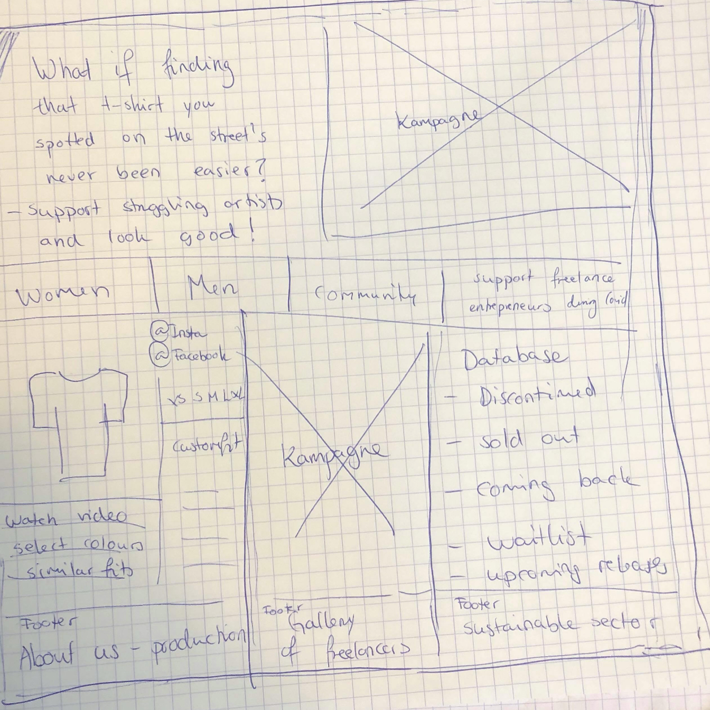
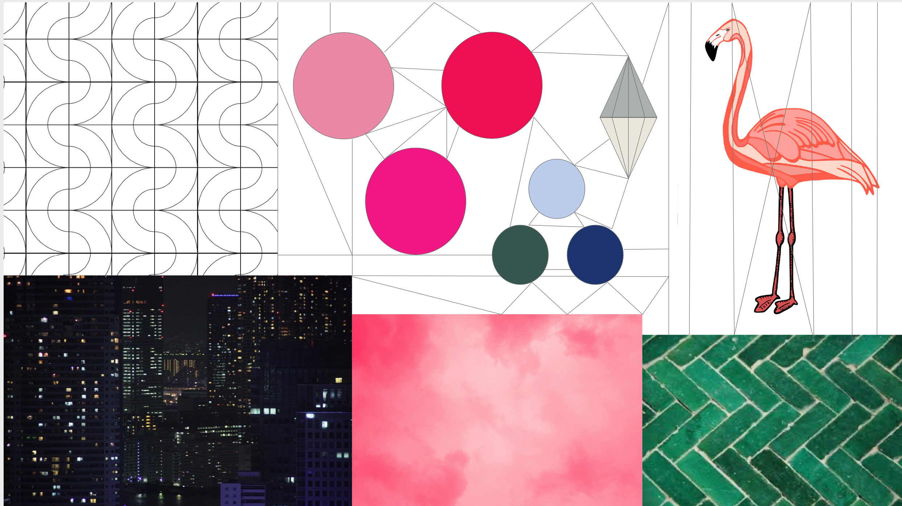
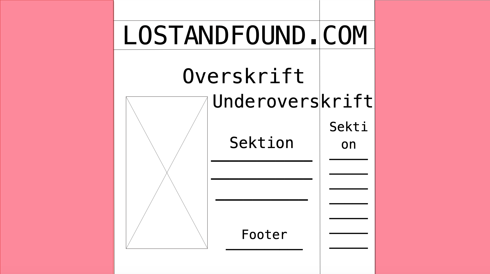
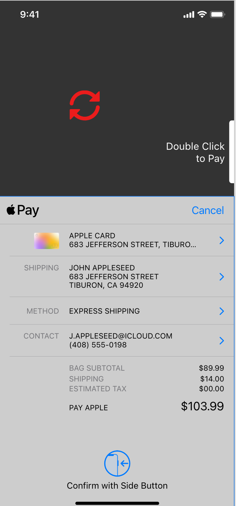
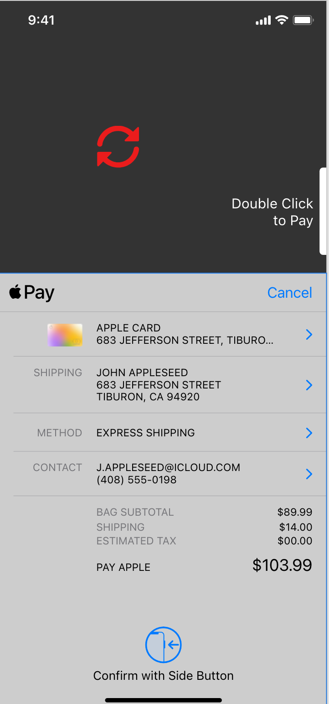

Tema 3 - Grundlæggende UX
På UX-forløbet blev vi bekendte med researchmetoder og UI-design. Der var meget mere fokus på alt den afgørende research, man skal indsamle, inden man præsenterer et endeligt produkt, som er så brugervenligt som muligt. Her lærte vi at arbejde med ui-kits, at lave prototype i Adobe XD samt mange metoder, der er gode til idégenerering såsom crazy 8s og heatmap.
Idé
Idé-sketch ↓
Ud fra mine observationer, surveyresearch og interviewresearch, fik jeg hurtigt defineret min målgruppe som folk, primært kvinder, beboende i storbyområder i Danmark. Jeg fik indsigter i forbrugernes behov. f.eks. at etisk appel, inklusion, gennemsigtighed fra afsenderen og eksponering gennem de sociale medier alle havde indflydelse på forbrugeren.
For selve brugeroplevelsen var det vigtigt med en overskuelig og lettilgængelig website, hvor selve shopping-oplevelsen var så nem som muligt. Eksempler kunne være 3 click til checkout, buy quick-funktion og mobilepay/applepay-mulighed var en bonus.
Jeg stod tilbage med problemstillingerne, hvordan min webshop kunne skille sig ud og hvilke problemer ved eksisterende webshops kunne gøres bedre. Jeg kom frem til en webshop, som består af et database-system i stedet for en regulær webshop. For at mit produkt kunne skille sig ud, ville jeg løse et håndgribeligt problem, nemlig tøj man kunne finde, som enten var udgået eller som man aldrig kunne lokalisere førhen. For at appellere etisk til forbrugeren, var idéen at databasen samarbejder med genbrugs- og vintage-forretninger - derved tager forbrugeren et bæredygtigt valg.
Moodboard ↓
Styletile ↓
Endelig prototype
Mit endelige produkt er en blanding af webshop/database ved navn lostandfound. Idéen er at appellere nostalgisk til forbrugeren ved at løse et problem, vi alle nok kender til - nemlig, når man enten har mistet et stykke tøj eller forelsket sig i et stykke tøj, man aldrig havde succes med at finde. Det endelige koncept opfordrer også til genbrug og bæredygtighed, samt er det tidsrelevant med en mærkesag, hvor en stor procent af indkøb via lostandfound går til udvalgte freelance kunstnere og designere, som kæmper for overlevelse som kreatør under Covid-19.
For at gøre brugeroplevelsen nem, har jeg tilføjet diverse ui-elementer såsom burger-menu, indkøbskurv, tre click til checkout (applepay), samt copy som f.eks. ved min "shop now"-funktion på startside og microcopy, f.eks. når der står skrevet "All you have to do is scan" på startsiden også.
 

Link til prototype ↓
PrototypePitch
Til min pitch af min prototype, valgte jeg at præsentere den, så den fanger opmærksomheden ved både at stille en problemstilling samt løse den i samme segment.
Jeg fulgte NABC-modellen så meget som muligt. N for needs og hvilke behov, der dækkes, som så ville være løsningen på at opspore et stykke tøj, som man ikke kunne finde andre steder. A for approach og hvordan behovene dækkes, hvilket er meget simpelt via databasen, hvor forbrugeren blot skal slå tøjet op eller uploade et billede i scanneren. B for benefits og hvad forbrugeren får ud af det, hvilket er at de endelig fandt et stykke tøj, som ikke kunne findes førhen. Arbejdet er gjort for dem og de støtter et godt formål ved at shoppe via lostandfound.com. C for Competition og hvordan er det bedre end alternativerne, hvor lostandfound.com er et ret unikt koncept, samt opfordrer det til genbrug og har en mærkesag. Der er meget gennemsigtighed med baggrundshistorie og about us-sektion.